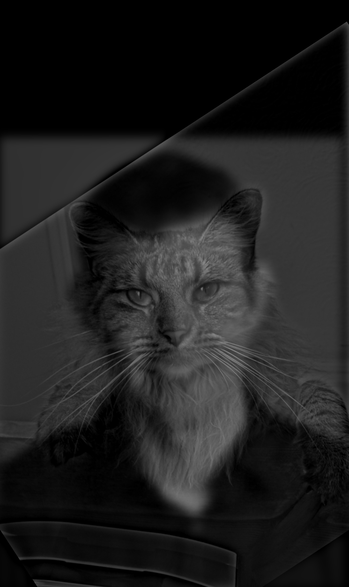
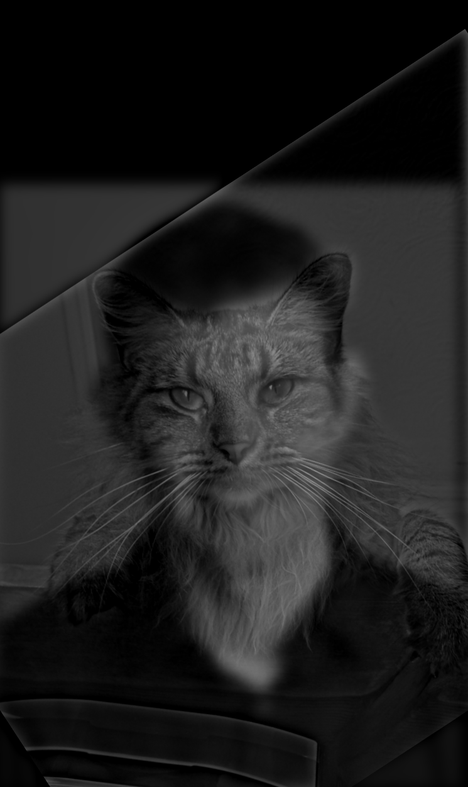
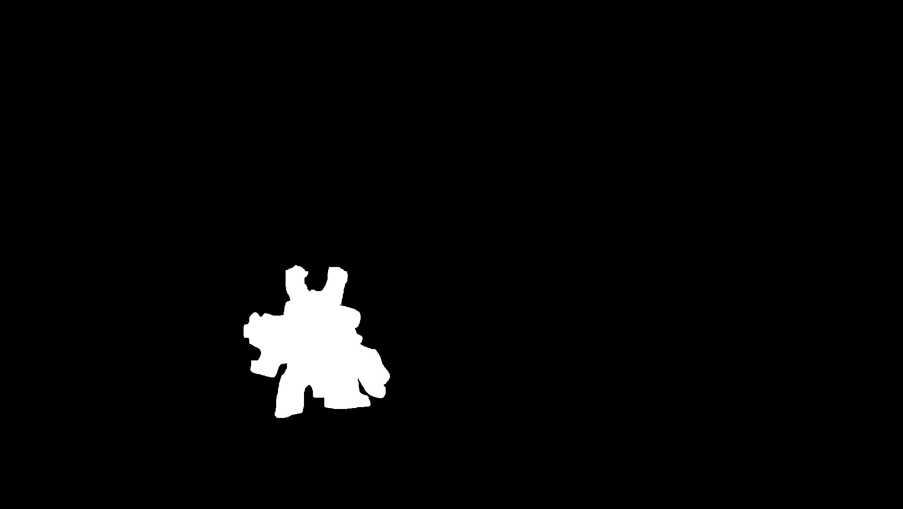
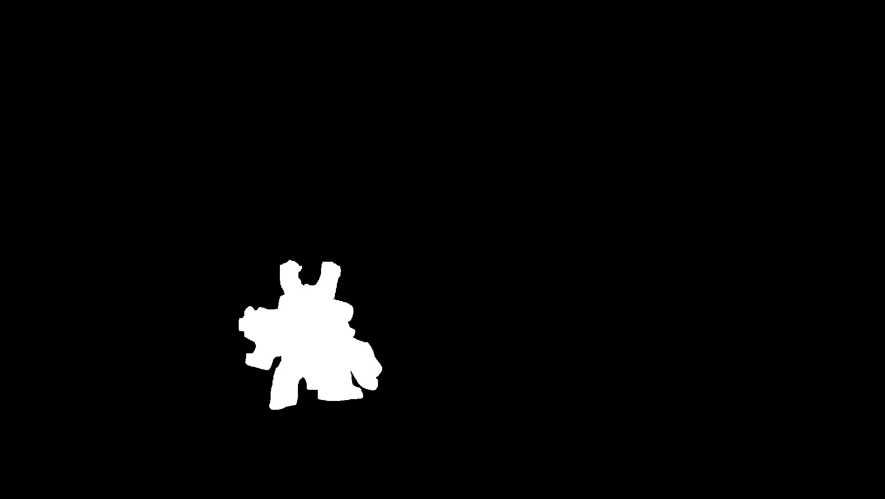

For this project we worked with images and frequencies in the images, such as by "sharpening" an image by increasing the amount of high frequency data in the image, blending two images together, creating hybrid images. We also learned how to make an edge detector using image gradients.
We use a simple derivative filter in order to compute the partial x and y (or horizontal and vertical) derivatives in the image. We can then take these partial derivatives to compute the gradient magnitude of the image. By taking the euclidean distance of the two derivatives for each pixel, we get the magnitude of the gradient at that pixel. This gradient we obtain of the image also functions as a sort of edge detector, and by thresholding the values we can remove excess noise in the image.
From the previous part, one thing we can notice is that the resulting gradients aren't very smooth and resulted in a lot of noise. We can deal with this by using a gaussian kernel and convolving it with the image to smooth it (and also remove higher frequency data). Then we can convolve the image with the previous derivative filter to compute the partial derivatives and the gradient of this smoothed image.
Since this process involves convolving using 2 different filters, we can simplify the process by convolving the two filters together to get a smoothed-derivative filter which can be applied to any image.
As we can see, there is no difference between doing two convolutions, or doing a single convolution with the merged filter between.
For image sharpening, we instead want the high frequency portion of the image, while the gaussian kernel gives us the low frequencies of the image. Luckily, we can obtain the high frequency by simply subtracting the low frequency from the image. Then, in order to sharpen the image, we take a multiple of this high frequency and add it to the original image, thereby amplifying the total amount of high frequency in the image.

Additionally, given the properties of the convolution, we can actually turn this process into a single filter. This results in the laplacian of a gaussian as the new kernel, which we can verify results in the same image as the previous process.


Hybrid images are images which look like one thing from up close and a a different image from far away. We do this by overlaying the high frequencies of one image (which are more noticeable from up close) on top of the low frequencies of another (which are more noticeable from far away). Using the unsharp filter and the gaussian kernel, we extract the high and low frequencies from the two different images and add them together.

 


Below we have the Fourier analysis of the owl-capybara hybrid image. As we can see, the gaussian removes a large portion of the high frequency, while the laplacian keeps most of it and removes most of the lower frequency from the data, but these filters are not perfect which results in parts of the high/low staying.

Bells and Whistles: We apply color to the same owl and capybara image. First, we try using the color for the owl (the high frequency) and then for the capybara (the low frequency). When giving the lower frequency the color, the result is noticeably better. This is probably due to the fact we can barely perceive the higher frequencies from afar, but while up close we can still perceive the lower frequencies, which interferes with the colored high frequency.
The goal of the next two sections is to cleanly blend two images together. The first step of this process is to compute a gaussian stack, where each layer of the stack is computed by convolving the previous layer with a gaussian, thereby getting lower and lower frequencies from the image. We can use this to compute a laplacian stack, which is done by taking the difference between two layers of the gaussian stack, obtaining the frequencies which are removed by the gaussian kernel. We do this with the two images we want to blend, as well as compute the gaussian stack for a mask.

Once we have the gaussian and laplacian stacks for the images, as well as the gaussian stack for the mask, we can begin blending the images together. This is done by masking each layer of the laplacian stack (through elementwise multiplication) with the gaussian stack layer for the mask and adding them together. These are additionally added to the lowest level gaussians which is also masked by the lowest level gaussian of the mask. This results in a much cleaner blend between the two images, without an abrupt transition.


One thing I thought would be cool would be comparing skins in game. These all use the simple vertical mask.
 
